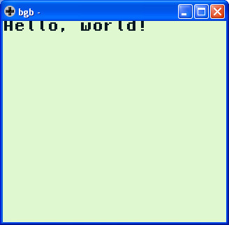

參考資訊：
https://bgb.bircd.org/
https://github.com/mrombout/gbdk_playground
http://gbdk.sourceforge.net/doc/html/book01.html
main.c
#include <stdio.h>
void main(void)
{
printf("Hello, world!");
}
編譯
$ export PATH=$PATH:/opt/gbdk/bin $ lcc -Wa-l -Wl-m -o main.gb main.c
執行bgb.exe，然後在bgb視窗上，按滑鼠右鍵，選擇Load ROM...，載入main.gb
